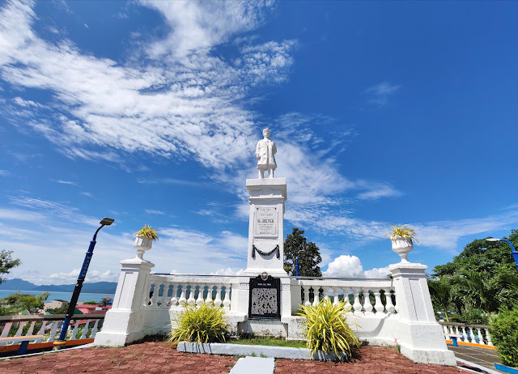
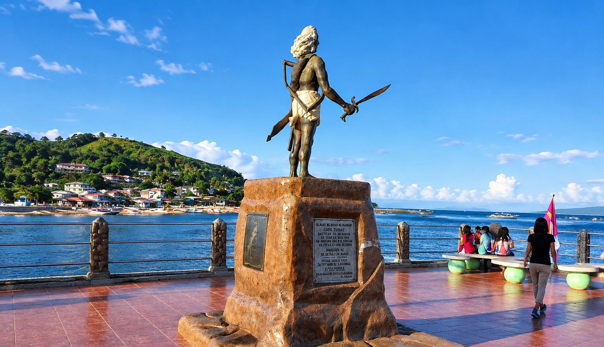
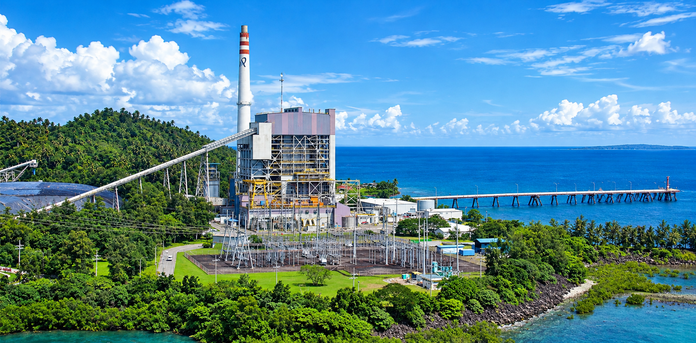

Stories of the Landmarks
Delve deeper into the rich and storied past of Mauban's most significant historical sites.

Rizal Hill Park
Originally known as Calvario Hill, this elevated site has long served as a strategic vantage point for the town. During the Spanish colonial era, it was a place of religious procession, marked by the Stations of the Cross that wound their way to the summit. The hill's panoramic view of Mauban and the bay made it an ideal location for the Rizal Monument, erected in honor of the national hero, Dr. Jose Rizal.
During World War II, the hill's strategic importance was rekindled. It served as a crucial observation post for Filipino and American forces, providing early warnings of enemy movements across the bay. Today, Rizal Hill Park is a tranquil public space where locals and visitors alike gather to watch the sunset, reflecting on the layers of history that lie beneath its peaceful surface.
Mauban Seawall
The Mauban Seawall is more than just a coastal defense; it is a testament to the town's resilience and its enduring relationship with the sea. Built to protect the shoreline from erosion and storm surges, the seawall has become an integral part of the community's daily life. It is a place for morning jogs, evening strolls, and gathering with friends and family.
The seawall is perhaps most famous for its role during the Japanese landing in Quezon in 1941. As enemy forces approached, local guerrillas and townsfolk used the seawall as a defensive position, engaging in fierce resistance. The Gatuban monument, which stands proudly along the wall today, serves as a poignant reminder of the town's legendary defender and the bravery of its people during those dark times.


Mauban Public Bath
Reportedly constructed in 1725, the Mauban Public Bath is one of the town's oldest surviving structures. Built using limestone and crushed seashells, it is a remarkable example of early colonial engineering. The bath was designed to capture the natural spring water that flowed down from the nearby hills, providing a clean and reliable source of water for the community.
For centuries, the bath served as a social hub where locals would gather to wash clothes, bathe, and exchange news. While its practical use has diminished over time, the structure remains a cherished historical landmark, preserved by the local government and community organizations as a tangible link to Mauban's colonial past.
Gatuban Park
Gatuban Park is a living memorial dedicated to the legendary figure of Gat Uban, whose name is inextricably linked to the origins of Mauban. According to local lore, Gat Uban was a valiant leader who organized the townsfolk to defend against frequent Moro pirate raids. His nickname, which translates to "gray hair," is said to have been earned through his wisdom and experience in battle.
The park, located near the town center, offers a serene escape from the bustling streets. It features lush greenery, shaded walkways, and a monument honoring Gat Uban. It stands as a powerful reminder of the town's indigenous roots and the brave souls who fought to protect their home, ensuring that the legend of Mauban's defender will never be forgotten.


Quezon Power Plant
The Quezon Power Plant, operated by Quezon Power (Philippines), Limited Co., is a 460-megawatt coal-fired facility located in Barangay Cagsiay I. It began commercial operations in May 2000 and has since been a significant contributor to the Luzon grid's power supply. The plant is owned by Thailand's EGCO Group and was recognized as the first Build-Own-Operate power project in the Philippines.
Beyond its industrial role, the plant is deeply involved in the community. It has initiated various programs focusing on education, health, and environmental conservation, including sea turtle conservation and mangrove forest rehabilitation. The facility also funds a technical-vocational scholarship program that has benefited hundreds of residents in Mauban.